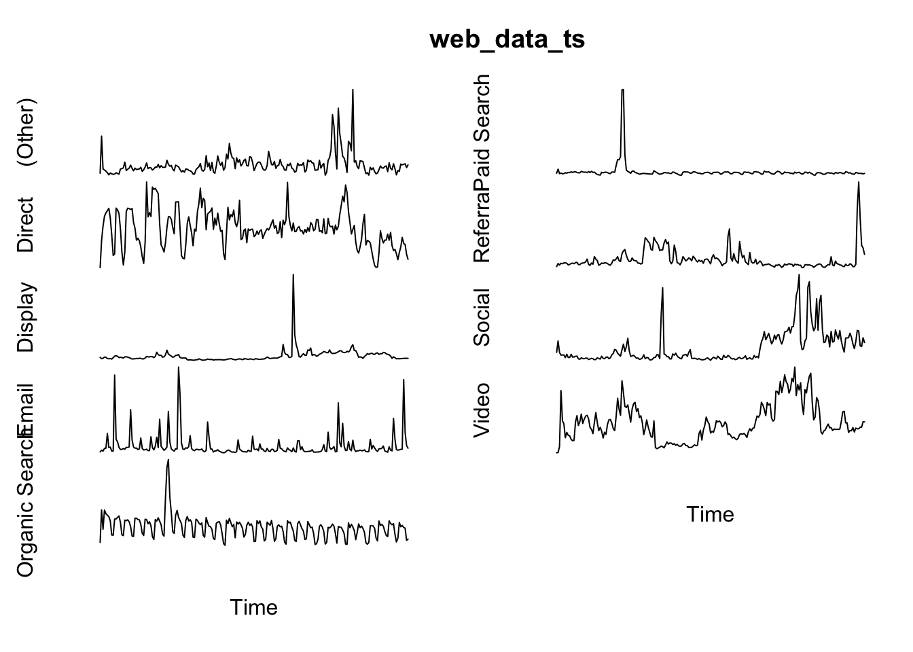
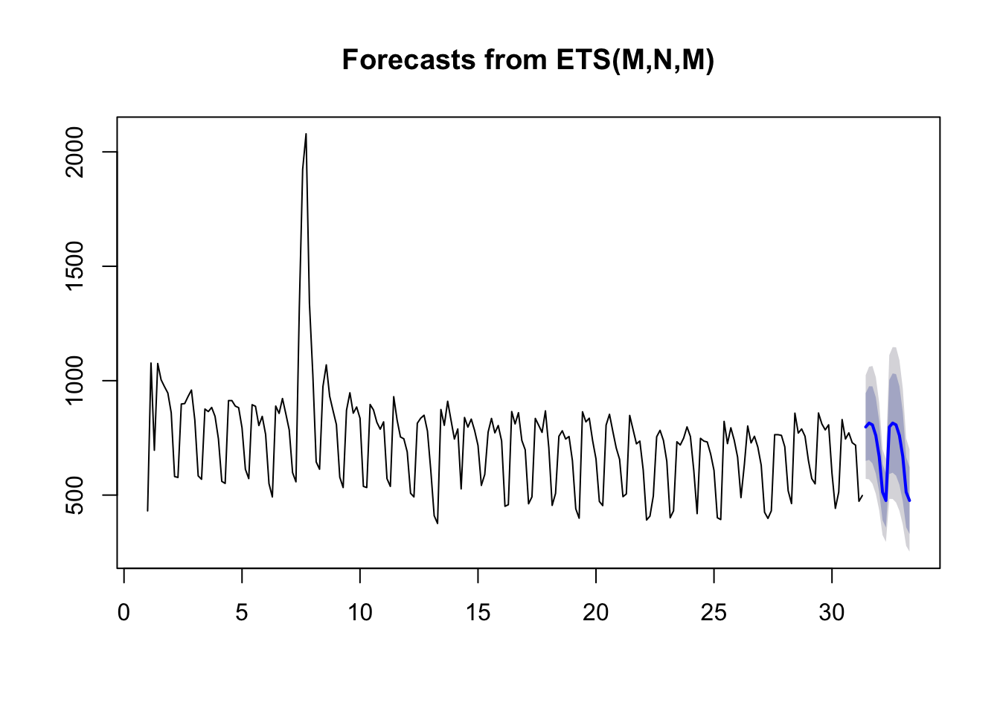
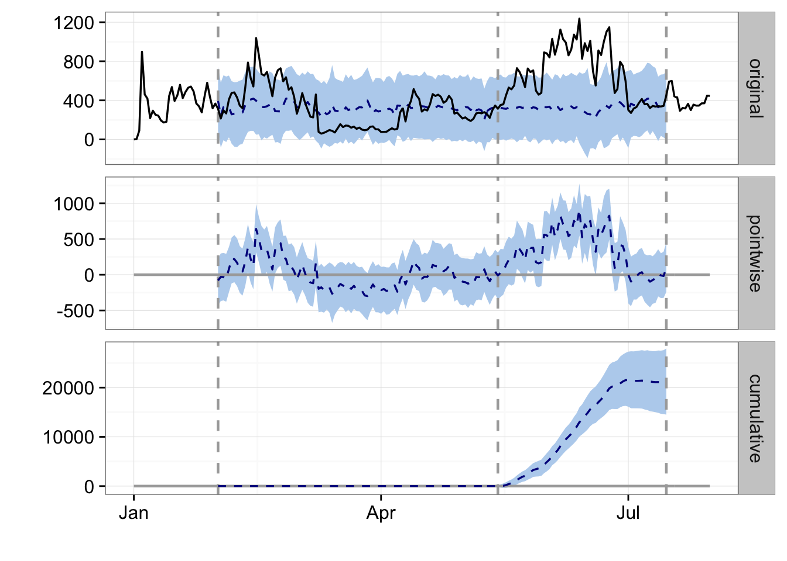

Time Series
Time-series are a special sub-class of data, referring to when you have some ordered observations over time.
Time-series are often found when dealing with digital analytics, and R uses a special class to deal with them as they have some unique properties. A guide to general R timeseries is here and a list of possible packages to use with time-series is in this CRAN task view. If you want to get into forecasting then another R New-Zealand hero is Rob Hyndman, who has lots of techniques described on his blog.
Creating time-series
Time-series are created in base R via the ts() command, which you will typically feed in some numeric data that is assumed to be in order of observation.
For most purposes you will be starting from a data.frame and need to transform it into a time-series in order for the R functions to work.
## get the web data
library(knitr)
web_data <- read.csv("./data/gadata_example_2.csv", stringsAsFactors = FALSE)
kable(head(web_data[-1]), row.names = FALSE)| date | channelGrouping | deviceCategory | sessions | pageviews | entrances | bounces |
|---|---|---|---|---|---|---|
| 2016-01-01 | (Other) | desktop | 19 | 23 | 19 | 15 |
| 2016-01-01 | (Other) | mobile | 112 | 162 | 112 | 82 |
| 2016-01-01 | (Other) | tablet | 24 | 41 | 24 | 19 |
| 2016-01-01 | Direct | desktop | 133 | 423 | 133 | 61 |
| 2016-01-01 | Direct | mobile | 345 | 878 | 344 | 172 |
| 2016-01-01 | Direct | tablet | 126 | 237 | 126 | 77 |
We will also pivot the data like before:
## use tidyverse to pivot the data
library(dplyr)
library(tidyr)
## get only desktop rows, and the date, channelGrouping and sessions columns
pivoted <- web_data %>%
filter(deviceCategory == "desktop") %>%
select(date, channelGrouping, sessions) %>%
spread(channelGrouping, sessions)
## get rid of any NA's and replace with 0
pivoted[is.na(pivoted)] <- 0
kable(head(pivoted))| date | (Other) | Direct | Display | Organic Search | Paid Search | Referral | Social | Video | |
|---|---|---|---|---|---|---|---|---|---|
| 2016-01-01 | 19 | 133 | 307 | 17 | 431 | 555 | 131 | 68 | 0 |
| 2016-01-02 | 156 | 1003 | 196 | 43 | 1077 | 1060 | 226 | 158 | 3 |
| 2016-01-03 | 35 | 1470 | 235 | 29 | 696 | 489 | 179 | 66 | 90 |
| 2016-01-04 | 31 | 1794 | 321 | 70 | 1075 | 558 | 235 | 46 | 898 |
| 2016-01-05 | 27 | 1899 | 309 | 74 | 1004 | 478 | 218 | 47 | 461 |
| 2016-01-06 | 21 | 1972 | 204 | 299 | 974 | 494 | 246 | 47 | 418 |
A seasonal time-series
For data lengths less than a year, then a weekly seasonality is most likely. Adding this seasonality to your data can be very helpful in creating forecasts as it helps extract a real trend.
## make a time-series object
web_data_ts <- ts(pivoted[-1], frequency = 7)
## time-series are set up to have useful plots
plot(web_data_ts, axes = FALSE)
Time-series appplications
Decomposition
With seasonal data, you can extract the seasonality (weekly in this example) so you can more easily see the overall trend of data:
decomp <- decompose(web_data_ts[, "Organic Search"])
plot(decomp)
- Observed - the original data
- Trend - the data minus the seasonal
- Seasonal - data that fits the specified seasonality (7 days)
- Random - everything else left only - useful for anomoloy detection.
Forecasts
Forecasting looks at the trend of the data and makes judgements on where the trend will go. A good blog from Hyndman on daily data forecasting is here.
A couple of example functions:
library(forecast)
## performs decomposition and smoothing
fit <- ets(web_data_ts[, "Organic Search"])
## makes the forecast
fc <- forecast(fit)
plot(fc)
Converting to xts for some packages
We can only work with numeric data, but we would also like to keep the date information, mainly for labelling purposes. xts lets you create the time-series whilst specifying the date labels like so:
library(xts)
## create a time-series zoo object
web_data_xts <- xts(pivoted[-1], order.by = as.Date(pivoted$date), frequency = 7)web_data_xts will look similar to when it was a data.frame, but its now in the right class to do some nice related functions.
CausalImpact
A good example of a library that needs xts is CausalImpact, which is a fantastic library from Google well suited for digital marketing.
CausalImpact gives you an estimate on how much effect an event at a certain point of time had on your metrics, in absolute and relative terms. In this case, an event could be a TV campaign starting or changing your Title tags. It also lets you add control segments, so you can adjust for known effects.
As an example, we assume the observed peak in Social traffic is due to the start of some campaign in May 15th 2016 (in reality you should not cherry pick dates like this!) and we woud like to observe its effect on Video sessions. We also add Direct sessions as a control to help account for general website trends.
library(CausalImpact)
pre.period <- as.Date(c("2016-02-01","2016-05-14"))
post.period <- as.Date(c("2016-05-15","2016-07-15"))
## data in order of response, predictor1, predictor2, etc.
model_data <- web_data_xts[,c("Video","Social","Direct")]
impact <- CausalImpact(model_data, pre.period, post.period)
plot(impact)
- original - the original response data, with a forecast (blue) of where it should have been in post event period
- pointwise - the difference between the forecast and reality per day
- cumulative - the cumuative effect on sessions in the post event period
CausalImpact is the work-horse behind the GA Effect app.